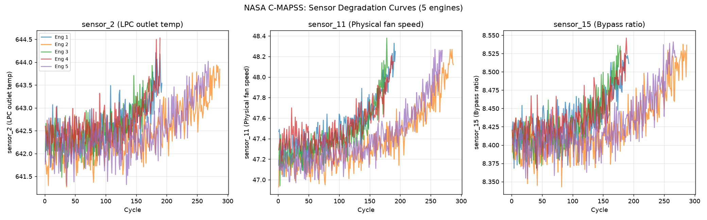
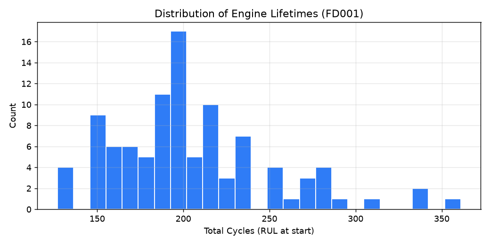
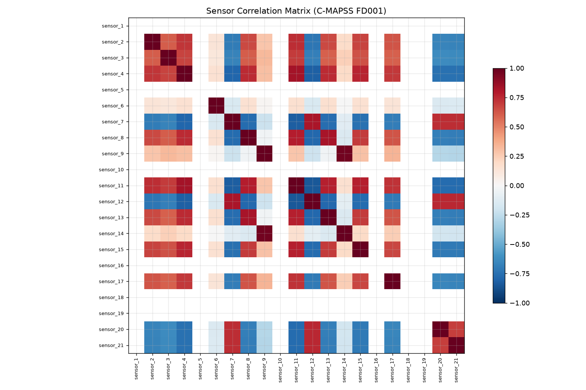
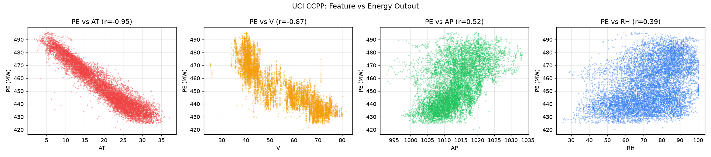
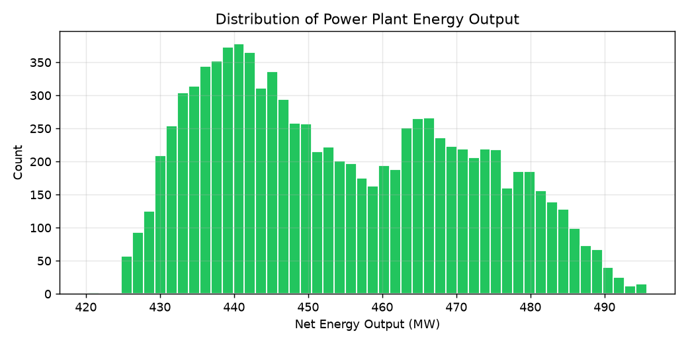
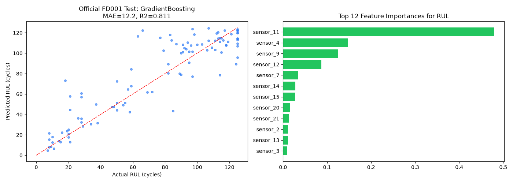
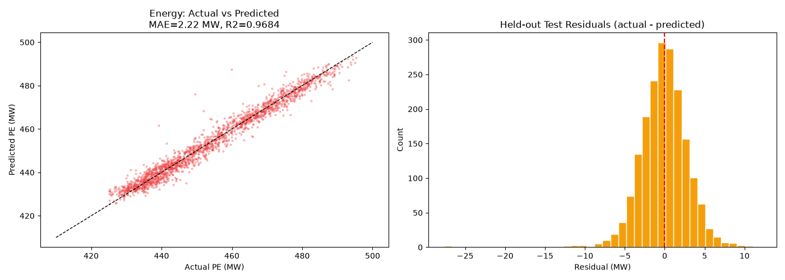

Combined-Cycle Power Plant (drag to rotate, scroll to zoom)
Field Instruments
Waiting for sample
Air intake → gas turbine → heat-recovery steam generator → steam turbine → condenser and cooling loop
Plant equipment is a detailed visual model. Instrument values come from the selected UCI sample; the dataset does not provide separate tags for every component.
Measured vs Model-Estimated Net Output
Model Residual by Source Sample
Measured Output vs Ambient Temperature
Selected Physical Record
The record ID points to the row in the included UCI data export. There is no timestamp; replay order is not a chronological operating trend.
| Source row | AT C | V cm Hg | AP mbar | RH % | Measured MW | Estimate MW | Residual MW |
|---|---|---|---|---|---|---|---|
| Loading data | |||||||
Dataset Provenance
| Dataset | Source | Rows | Use |
|---|---|---|---|
| NASA C-MAPSS FD001 | NASA PCoE repository | 20,631 train rows; 100 test engines | Simulated aircraft-engine RUL benchmark |
| UCI Combined Cycle Power Plant | UCI ML Repository | 9,568 measured records, 2006-2011 | Real plant environmental inputs and net output; no timestamps |
The 3D scene is a reference combined-cycle plant model. UCI records are measured physical observations but shuffled and timestamp-free; NASA C-MAPSS is simulated aircraft-engine data. Neither is HPCL refinery data.
C-MAPSS: Sensor Degradation (5 engines)

C-MAPSS: Engine Lifetime Distribution

C-MAPSS: Sensor Correlation Matrix

CCPP: Feature vs Energy Output

CCPP: Energy Output Distribution

RUL Prediction: Actual vs Predicted

Energy Prediction: Actual vs Predicted

Public Benchmark Results
| Task | Benchmark and test | Model | MAE | R2 | Interpretation |
|---|---|---|---|---|---|
| Remaining useful life | NASA C-MAPSS FD001; official test, 100 engines | Gradient Boosting | 12.16 cycles | 0.811 | Median baseline MAE: 38.01 cycles; RUL capped at 125 |
| Power output | UCI CCPP; held-out 20% test, 1,914 rows | Gradient Boosting | 2.220 MW | 0.968 | Predicts plant output; residuals are not measured energy waste |
| Unsupervised outlier flags | NASA C-MAPSS FD001; 100 test endpoints | Isolation Forest | -- | -- | Flagged 6 endpoints; no anomaly ground-truth labels |
RUL model selection uses an engine-held-out split; final RUL metrics use the dataset's official test labels. These benchmark scores are not validated refinery performance.
Asset health & anomaly score
Recommended actions
What-if performance scenario
ROI impact & value gain
Innovation Catalog Summary
The wider ideation catalog is exploratory. This prototype focuses on a proposed refinery efficiency and maintenance decision-support pilot; each opportunity needs validation against the chosen HPCL business track and challenge video.